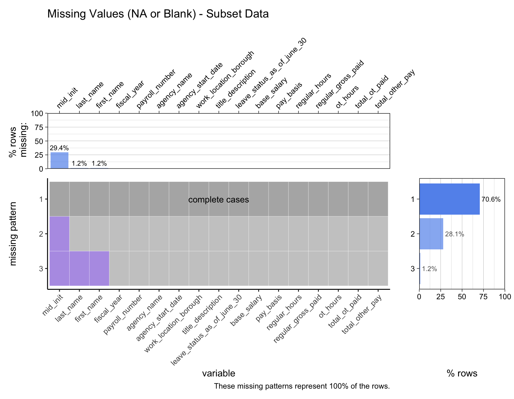
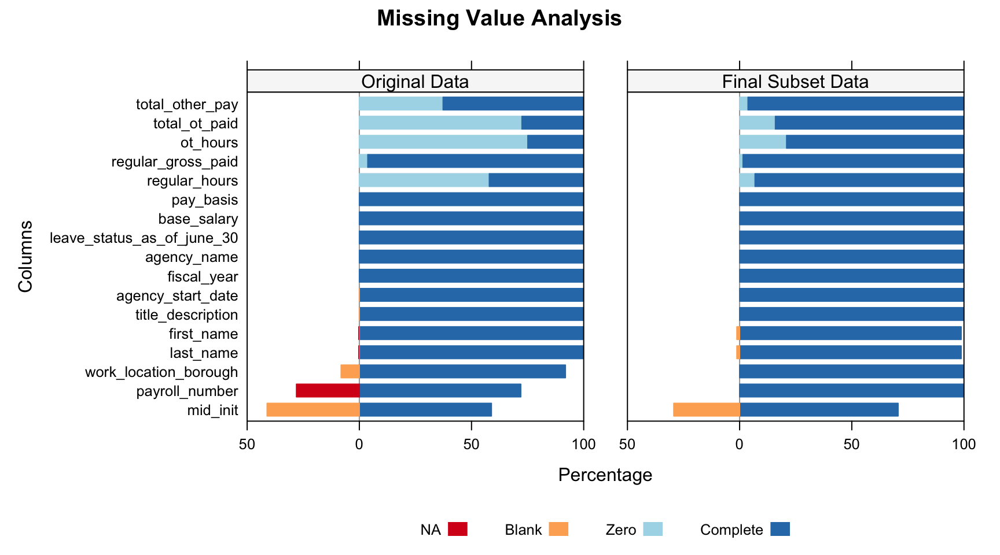

| Column Name | Filter |
|---|---|
| Fiscal Year | From 2015 to 2024 (10 years) |
| Agency Name | FIRE DEPARTMENT, POLICE DEPARTMENT |
| Work Location Borough | BRONX, BROOKLYN, MANHATTAN, QUEENS, STATEN ISLAND |
| Pay Basis | per Annum, per Day, per Hour |
2 Data
This page contains Tabs. Please click through tabs to see additional charts/info.
2.1 Description
For this project, we will be using a subset of the Citywide Payroll Data.
This dataset is available via NYC OpenData and provided by the Office of Payroll Administration (OPA).
- Fire Department 🧑🚒 🚒
- Police Department 👮🚓
Here are the filters applied to the original data to produce our final subset of data:
2.1.1 Data information
The payroll data is provided annually by NYC OpenData and contains New York City employee salaries by Fiscal Year. We are using the latest snapshot of the data, released on October 30, 2024. Here are some details about the format of the data, the frequency of updates, dimensions about the data, and other relevant metadata:
| Dataset Name | Citywide Payroll Data (Fiscal Year) |
| Provided by | Office of Payroll Administration (OPA) |
| Data Category | City Government |
| Frequency of Updates | Annually |
| Date Created | October 31, 2015 |
| Data Last Updated | October 30, 2024 |
| Dimensions | Raw Data: 6,225,611 rows | 17 columns Subset Data: 804,630 rows | 17 columns |
| Each row represents | City Employee Salary per Fiscal Year |
| Source URL | https://data.cityofnewyork.us/ |
| Column Name | Description | Data Type |
|---|---|---|
| Fiscal Year | Fiscal Year | Number |
| Payroll Number | Payroll Number | Number |
| Agency Name | The Payroll agency that the employee works for | Text |
| Last Name | Last name of employee | Text |
| First Name | First name of employee | Text |
| Mid Init | Middle initial of employee | Text |
| Agency Start Date | Date which employee began working for their current agency | Timestamp |
| Work Location Borough | Borough of employee's primary work location | Text |
| Title Description | Civil service title description of the employee | Text |
| Leave Status as of June 30 | Status of employee as of the close of the relevant fiscal year: Active, Ceased, or On Leave | Text |
| Base Salary | Base Salary assigned to the employee | Number |
| Pay Basis | Lists whether the employee is paid on an hourly, per diem or annual basis | Text |
| Regular Hours | Number of regular hours employee worked in the fiscal year | Number |
| Regular Gross Paid | The amount paid to the employee for base salary during the fiscal year | Number |
| OT Hours | Overtime Hours worked by employee in the fiscal year | Number |
| Total OT Paid | Total overtime pay paid to the employee in the fiscal year | Number |
| Total Other Pay | Includes any compensation in addition to gross salary and overtime pay, i.e., Differentials, lump sums, uniform allowance, meal allowance, retroactive pay increases, settlement amounts, and bonus pay, if applicable. | Number |
2.1.2 Data Source
flowchart LR A[Importing Data] --> B[Understanding and \n cleaning the raw data] B --> C(Transforming columns) B --> D(Filtering Data) B --> E(Backfilling NA) C --> F[Saving Subset Data] D --> F[Saving Subset Data] E --> F[Saving Subset Data]
To access the data, we can go directly to the URL:
From this URL, you can click the button ‘Export’, and then select Download File-CSV format (All data 6225611 rows). This will download a file of about 840MB. Remember, we are using the data Last Updated on October 30, 2024.
The file will be downloaded with the name: Citywide_Payroll_Data__Fiscal_Year__YYYYMMDD.csv(YYYYMMDD refers to the date that you downloaded the file)
Once the data was downloaded, it was added to a new folder inside the repository called ‘data_source’.
Code
# import original data
payroll_data_source <- read.csv("./data_source/Citywide_Payroll_Data__Fiscal_Year__20241111.csv")
# make a copy of original data for transformations
payroll_data <- data.frame(payroll_data_source)
# rename columns
names(payroll_data) <- gsub("[\\.]+", "_", tolower(names(payroll_data_source)))
The decision-making process for selecting a subset of the data and the detailed transformation and clean up of the original dataset with 6,225,611 rows to our final dataset with 804,630 rows can be found in the Appendix section.
The data used for this analysis is a subset of the entire raw data. The final subset data (focused on the Fire and Police departments) contains 804,630 rows out of the 6,225,611 rows from the original dataset.
To generate the final subset that will be used in the analysis, please run the code below:
Code
# `payroll_data` dataframe comes from the **Importing the data** section.
payroll_data_fire_police <-
payroll_data |>
# clean agency name:
mutate(agency_name_clean = trimws(gsub("#\\d+$", "", agency_name))) |>
# clean job titles:
mutate(title_description = toupper(title_description)) |>
# clean location name:
mutate(work_location_borough_clean = toupper(work_location_borough)) |>
# filtering data:
filter(agency_name_clean %in% c("POLICE DEPARTMENT","FIRE DEPARTMENT")) |>
filter(work_location_borough_clean %in% c("BRONX", "BROOKLYN", "MANHATTAN", "QUEENS", "RICHMOND")) |>
filter(fiscal_year >= "2015" & fiscal_year <= "2024") |>
filter(pay_basis %in% c("per Annum", "per Day", "per Hour")) |>
# backfill payroll number after filtering
mutate(
payroll_number_clean = case_when(
is.na(payroll_number) & agency_name_clean == "FIRE DEPARTMENT" ~ 57,
is.na(payroll_number) & agency_name_clean == "POLICE DEPARTMENT" ~ 56,
TRUE ~ payroll_number
)) |>
# converting dates:
mutate(agency_start_date_clean = mdy(agency_start_date)) |>
# renaming clean columns to original names:
mutate(
agency_name = agency_name_clean,
work_location_borough = work_location_borough_clean,
payroll_number = payroll_number_clean,
agency_start_date = agency_start_date_clean
) |>
# dropping clean columns
dplyr::select(-agency_name_clean,
-work_location_borough_clean,
-payroll_number_clean,
-agency_start_date_clean)
# Please uncomment the CSV or the RDS method to save the subset data:
# Save the data CSV
# write.csv(payroll_data_fire_police, "data_source/payroll_data_fire_police.csv", row.names = FALSE)
# Save the data RDS
# saveRDS(payroll_data_fire_police, "data_source/payroll_data_fire_police.rds")
# Read the data RDS
# payroll_data_fire_police <- readRDS("data_source/payroll_data_fire_police.rds")
2.2 Missing value analysis
To analyse missing data, we will classify our data in 4 categories:
■ NA - any values equal to NA
■ Blank - string values equal to “”
■ Zero - numeric values equal to 0
■ Complete - any values with data
2.2.1 NAs and Blanks
First, let’s check the missing values of the original dataset.
Using a sample of 1 million records (from 6.22 million rows) we have close to 4.5% of missing data classified as ■ NA or ■ Blank. We identified missing values in 7 columns*, including three related to a person’s name (first_name, mid_init, last_name), payroll_number, work_location_borough, title_description, and agency_start_date.
(*based on the black highlights and the percentages listed in the column names of the vis_miss() plot)
Code
payroll_data_missing <-
payroll_data |>
sample_n(100000) |>
mutate(across(everything(), ~ if_else(. == "", NA, .)))
payroll_data_missing |>
vis_miss(
sort_miss = TRUE,
# cluster = TRUE, # disabled because vector memory limit of 16.0 Gb reached, see mem.maxVSize()
show_perc_col = TRUE,
warn_large_data = FALSE,
) +
ggtitle("Missing Values (NA or Blank) - Original Data Sample")+
labs(caption = "Clustering has been disabled due high volume data and memory limits.") +
theme(plot.margin = margin(r = 50))
After transforming our original data to create our final subset data (Fire and Police Departments), we can now examine the missing values of the final dataset.
Code
# install.packages("remotes")
# remotes::install_github("jtr13/redav")
library(redav)
plot_missing_modified <- function(x, percent = TRUE, num_char = 100,
max_rows = NULL, max_cols = NULL) {
na_count_all <- data.frame(is.na(x)) %>%
dplyr::group_by_all() %>%
dplyr::count(name = "count", sort = TRUE) %>%
dplyr::ungroup() %>%
tibble::rownames_to_column("pattern")
if (!is.null(max_rows)) na_count_all <- na_count_all %>%
dplyr::filter(as.numeric(pattern) <= max_rows)
na_count_all <- na_count_all %>%
dplyr::mutate(pattern = factor(.data$pattern, levels = nrow(na_count_all):1))
# count the number of columns with missing values; will be used later to determine if there's a "none missing" pattern
na_count_all <- na_count_all %>%
dplyr::rowwise() %>%
dplyr::mutate(num_missing_cols = sum(dplyr::c_across(where(is.logical))))
# data frame for missing patterns bar chart
na_count_by_pattern <- na_count_all[,c("pattern", "count", "num_missing_cols")]
na_count_by_pattern$none_missing <- ifelse(na_count_by_pattern$num_missing_cols == 0, TRUE, FALSE)
# data frame for missing by column bar chart
na_count_by_column <- data.frame(is.na(x)) %>%
colSums() %>%
sort(decreasing = TRUE) %>%
tibble::enframe(name = "var", value = "count")
if (!is.null(max_cols)) na_count_by_column <- na_count_by_column %>%
dplyr::slice(1:max_cols)
# tidy and sort na_count_all by column counts
na_count_all_tidy <- na_count_all %>%
tidyr::pivot_longer(where(is.logical), names_to = "variable") %>%
dplyr::filter(variable %in% na_count_by_column$var) %>%
dplyr::mutate(variable = factor(.data$variable, levels = na_count_by_column$var)) %>%
dplyr::mutate(none_missing = ifelse(.data$num_missing_cols == 0, TRUE, FALSE))
# calculate the % of data shown
perc_shown <- 100*sum(na_count_by_pattern$count)/nrow(x)
# main plot
main_plot <- na_count_all_tidy %>%
ggplot2::ggplot(ggplot2::aes(.data$variable, .data$pattern, fill = factor(.data$value), alpha = .data$none_missing)) +
ggplot2::geom_tile(color = "white") +
ggplot2::scale_x_discrete(labels = abbreviate(levels(na_count_all_tidy$variable), num_char)) +
ggplot2::scale_fill_manual(values = c("grey70", "mediumpurple")) +
ggplot2::scale_alpha_manual(values = c(.7, 1)) +
ggplot2::labs(y = "missing pattern",
caption = paste0("These missing patterns represent ",
round(perc_shown, 1), "% of the rows.")) +
ggplot2::guides(fill = "none", alpha = "none") +
ggplot2::theme_classic(12)+
ggplot2::theme(axis.text.x = element_text(angle = 45, hjust = 1))
# check for "none missing" pattern
none_missing_pattern <- na_count_by_pattern %>%
dplyr::filter(.data$none_missing) %>% dplyr::pull(.data$pattern)
if (length(none_missing_pattern) > 0) {
column_count <- min(c(ncol(na_count_all)-2, max_cols+1))
main_plot <- main_plot +
ggplot2::annotate("text", x = column_count/2,
y = nrow(na_count_all) + 1 - as.numeric(as.character(none_missing_pattern)),
label = "complete cases")
}
# margin plots
denom <- ifelse(percent, nrow(x)/100, 1)
# top
missing_by_column_plot <-
na_count_by_column %>%
dplyr::mutate(var = abbreviate(var, num_char)) %>%
ggplot2::ggplot(ggplot2::aes(forcats::fct_inorder(.data$var), .data$count/denom)) +
ggplot2::geom_col(fill = "cornflowerblue", alpha = .7) +
ggplot2::scale_y_continuous(expand = c(0, 0), n.breaks = 3) +
ggplot2::labs(x = "",
y = ifelse(percent, "% rows \n missing:", "num rows \n missing:")) +
ggplot2::theme_linedraw(12) +
ggplot2::theme(panel.grid.major.x = ggplot2::element_blank(),
panel.grid.minor.x = ggplot2::element_blank(),
) +
ggplot2::theme(axis.text.x = element_text(angle = 45, hjust = 0))+
scale_x_discrete(position = "top") +
ggplot2::geom_text(
ggplot2::aes(
label = ifelse(.data$count / denom > 0, scales::percent(.data$count / denom / 100, accuracy = 0.1), NA)
),
vjust = -0.5,
size = 3
) +
ggtitle("Missing Values (NA or Blank) - Subset Data")
# right
missing_by_pattern_plot <-
ggplot2::ggplot(na_count_by_pattern, ggplot2::aes(.data$pattern, .data$count/denom, alpha = .data$none_missing)) +
ggplot2::geom_col(fill = "cornflowerblue") +
ggplot2::coord_flip() +
ggplot2::scale_y_continuous(expand = c(0, 0), n.breaks = 3) +
ggplot2::scale_alpha_manual(values = c(.7, 1)) +
ggplot2::labs(x = "", y = ifelse(percent, "% rows", "row count")) +
ggplot2::guides(alpha = "none") +
ggplot2::theme_linedraw(12) +
ggplot2::theme(panel.grid.major.y = ggplot2::element_blank(),
panel.grid.minor.y = ggplot2::element_blank()) +
ggplot2::geom_text(
ggplot2::aes(
label = ifelse(.data$count / denom > 0, scales::percent(.data$count / denom / 100, accuracy = 0.1), NA)),
hjust = -0.1,
size = 3
)
if (percent) {
missing_by_column_plot <- missing_by_column_plot +
ggplot2::scale_y_continuous(expand = c(0, 0), n.breaks = 5,
limits = c(0, 100))
missing_by_pattern_plot <- missing_by_pattern_plot +
ggplot2::scale_y_continuous(expand = c(0, 0), n.breaks = 5,
limits = c(0, 100))
}
missing_by_column_plot + patchwork::plot_spacer() +
main_plot + missing_by_pattern_plot +
patchwork::plot_layout(widths = c(4, 1), heights = c(2, 4))
}
payroll_data_fire_police <- readRDS("data_source/payroll_data_fire_police.rds")
payroll_data_fire_police_na_blank <-
payroll_data_fire_police |>
mutate(across(everything(), ~ case_when(. == "" ~ NA, TRUE ~ .)))
plot_missing_modified(payroll_data_fire_police_na_blank, percent = TRUE)
plot_missing() original source function has been modified
Original function was changed to accommodate long column names in the x-axis and show % labels.
2.2.2 Zeros and Complete Values
In addition to NAs and Blanks, an important part of this dataset is the analysis of ■ Zero values. For this dataset, Zeros are relevant information and should not be excluded from the data. Let’s take a look at the full analysis of NAs, Blanks, Zeros, and Complete values.
We can now examine how the values from the original compares to the final dataset:
Code
#Data Transformation
payroll_data_total_summary <- payroll_data |>
summarise(across(everything(), ~ n())) |>
pivot_longer(
cols = everything(),
names_to = "Column",
values_to = "Total Count"
)
payroll_data_na_summary <- payroll_data |>
summarise(across(everything(), ~ sum(is.na(.)))) |>
pivot_longer(
cols = everything(),
names_to = "Column",
values_to = "NA"
)
payroll_data_blank_summary <- payroll_data |>
summarise(across(everything(), ~ sum(. == "", na.rm = TRUE))) |>
pivot_longer(
cols = everything(),
names_to = "Column",
values_to = "Blank"
)
payroll_data_zero_summary <- payroll_data |>
summarise(across(everything(), ~ sum(. == 0, na.rm = TRUE))) |>
pivot_longer(
cols = everything(),
names_to = "Column",
values_to = "Zero"
)
payroll_data_combined_summary <-
payroll_data_total_summary |>
inner_join(payroll_data_na_summary, by = "Column") |>
inner_join(payroll_data_blank_summary, by = "Column") |>
inner_join(payroll_data_zero_summary, by = "Column")
# payroll_data_combined_summary
payroll_data_combined_summary_likert <-
payroll_data_combined_summary |>
mutate(`Complete` = `Total Count` - `NA` - `Blank` - Zero) |>
mutate(`Complete` = `Complete` / `Total Count`) |>
mutate(`NA` = `NA` / `Total Count`) |>
mutate(`Blank` = `Blank` / `Total Count`) |>
mutate(`Zero` = Zero / `Total Count`) |>
dplyr::select(`Column`,`NA`,`Blank`,Zero,`Complete`) |>
filter(!Column %in% c('agency_name_clean','work_location_borough_clean'))
likert_colors <- c("NA" = "#D7191C",
"Blank" = "#FDAE61",
"Zero" = "#ABD9E9",
"Complete" = "#2C7BB6")
payroll_data_fire_police <- readRDS("data_source/payroll_data_fire_police.rds")
payroll_data_fire_police_total_summary <- payroll_data_fire_police |>
summarise(across(everything(), ~ n())) |>
pivot_longer(
cols = everything(),
names_to = "Column",
values_to = "Total Count"
)
payroll_data_fire_police_na_summary <- payroll_data_fire_police |>
summarise(across(everything(), ~ sum(is.na(.)))) |>
pivot_longer(
cols = everything(),
names_to = "Column",
values_to = "NA"
)
payroll_data_fire_police_blank_summary <- payroll_data_fire_police |>
summarise(across(everything(), ~ sum(. == "", na.rm = TRUE))) |>
pivot_longer(
cols = everything(),
names_to = "Column",
values_to = "Blank"
)
payroll_data_fire_police_zero_summary <- payroll_data_fire_police |>
summarise(across(everything(), ~ sum(. == 0, na.rm = TRUE))) |>
pivot_longer(
cols = everything(),
names_to = "Column",
values_to = "Zero"
)
payroll_data_fire_police_combined_summary <-
payroll_data_fire_police_total_summary |>
inner_join(payroll_data_fire_police_na_summary, by = "Column") |>
inner_join(payroll_data_fire_police_blank_summary, by = "Column") |>
inner_join(payroll_data_fire_police_zero_summary, by = "Column")
payroll_data_fire_police_combined_summary_likert <-
payroll_data_fire_police_combined_summary |>
mutate(`Complete` = `Total Count` - `NA` - `Blank` - Zero) |>
mutate(`Complete` = `Complete` / `Total Count`) |>
mutate(`NA` = `NA` / `Total Count`) |>
mutate(`Blank` = `Blank` / `Total Count`) |>
mutate(`Zero` = Zero / `Total Count`) |>
dplyr::select(`Column`,`NA`,`Blank`,Zero,`Complete`) |>
filter(!Column %in% c('agency_name_clean','work_location_borough_clean'))
# Chart
payroll_data_missing_group_likert <- bind_rows(
payroll_data_combined_summary_likert |> mutate(group= 'Original Data'),
payroll_data_fire_police_combined_summary_likert |> mutate(group= 'Final Subset Data')
)
HH::likert(x=Column~. | group,payroll_data_missing_group_likert,
positive.order=TRUE,
as.percent = T,
main = 'Missing Value Analysis',
xlab='Percentage',
ylab='Columns',
col = likert_colors,
ReferenceZero=2.5,
rightAxis=FALSE,
# xlimEqualLeftRight=TRUE,
xlim=c(-50,100),
)
Diverging stacked bar chart to analyze missing data
In this dataset, values classified as “Complete” or “Zero” are considered positive, as they indicate usable data that can be effectively analyzed. Conversely, “NA” and “Blank” values pose potential issues for data interpretation. To reflect this distinction, the diverging stacked bar chart will position “NA” and “Blank” values on the left side, representing a negative impact on the analysis.
| Column Name | NA | Blank | Zero | Complete |
|---|---|---|---|---|
| Payroll Number | 28.0 % | - | - | 72 % |
| Last Name | 0.0004 % | 0.2 % | - | 99.8 % |
| First Name | 0.0014 % | 0.2 % | - | 99.8 % |
| Mid Init | - | 41.1 % | 0.0006 % | 58.9 % |
| Work Location Borough | - | 8.1 % | - | 91.9 % |
| Agency Start Date | - | 0.002 % | - | 99.9 % |
| Title Description | - | 0.002 % | - | 99.9 % |
| Regular Hours | - | - | 57.9 % | 42.1 % |
| Regular Gross Paid | - | - | 3.8 % | 96.2 % |
| OT Hours | - | - | 75.1 % | 24.9 % |
| Total OT Paid | - | - | 72.5 % | 27.5 % |
| Total Other Pay | - | - | 37.3 % | 62.7 % |
| Fiscal Year , Agency Name, Leave Status as of June 30, Base Salary, Pay Basis | - | - | - | 100 % |
| Column Name | NA | Blank | Zero | Complete |
|---|---|---|---|---|
| Mid Init | - | 29.4 % | - | 70.6 % |
| Last Name, First Name | - | 1.2 % | - | 98.8 % |
| Regular Hours | - | - | 6.9 % | 93.1 % |
| Regular Gross Paid | - | - | 1.5 % | 98.5 % |
| OT Hours | - | - | 20.9 % | 79.1 % |
| Total OT Paid | - | - | 15.9 % | 84.1 % |
| Total Other Pay | - | - | 3.7 % | 96.3 % |
| Fiscal Year , Payroll Number , Agency Name, Agency Start Date, Work Location Borough, Title Description, Leave Status as of June 30, Base Salary, Pay Basis | - | - | - | 100 % |
Our original dataset has ■ NA data for payroll_number, first_name, last_name. It also has ■ Blank data in 6 columns: first_name, mid_init, last_name, work_location_borough, title_description, agency_start_date.
For both datasets, ■ Zero values show up in columns related to the amount paid to a person, which can be 3 categories: regular, overtime, other. If a certain category is 0, it means the person did not receive any money for that category. This in an important information because it does not requires us to exclude or impute these values. We can observe a significant reduction of zero values in the subset dataset compared to the original.
Our final subset data (Fire and Police Departments) no longer contains ■ NA data, but still contains ■ Blank data in 3 columns: first_name, mid_init, last_name.
- For mid_init (Middle Name Initials), 29% of the data in the final subset is Blank, it is ok for us to have blanks in the data, this will not affect the future analysis.
- For first_name and last_name blank data (1.2% of the data in the final subset is Blank), these values are blank on purpose by the data provider:
…As a part of FISA-OPA’s routine process for reviewing and releasing Citywide Payroll Data, data for some agencies (specifically NYC Police Department (NYPD) and the District Attorneys’ Offices (Manhattan, Kings, Queens, Richmond, Bronx, and Special Narcotics)) have been redacted since they are exempt from disclosure pursuant to the Freedom of Information Law, POL § 87(2)(f), on the ground that disclosure of the information could endanger the life and safety of the public servants listed thereon…
In conclusion, the subset data for FIRE and POLICE departments (which will be used in the Results section) contains no ■ NA values, only ■ Blank values that won’t affect the analysis, ■ Zero values that are crucial for salary-related insights, and multiple columns with a ■ Complete set of values for all rows.